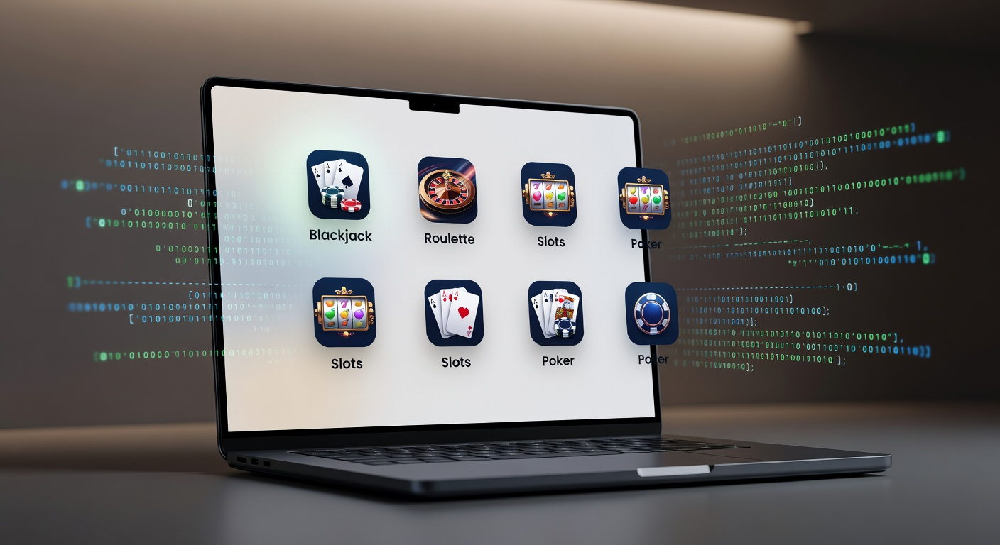
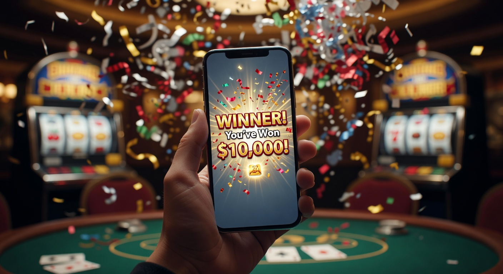
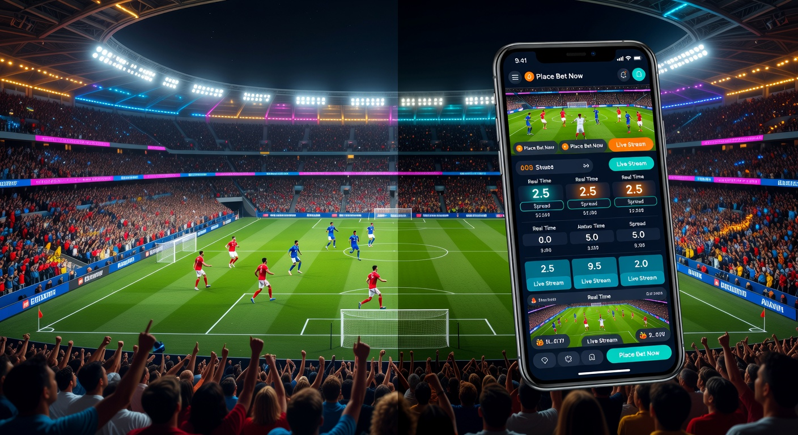
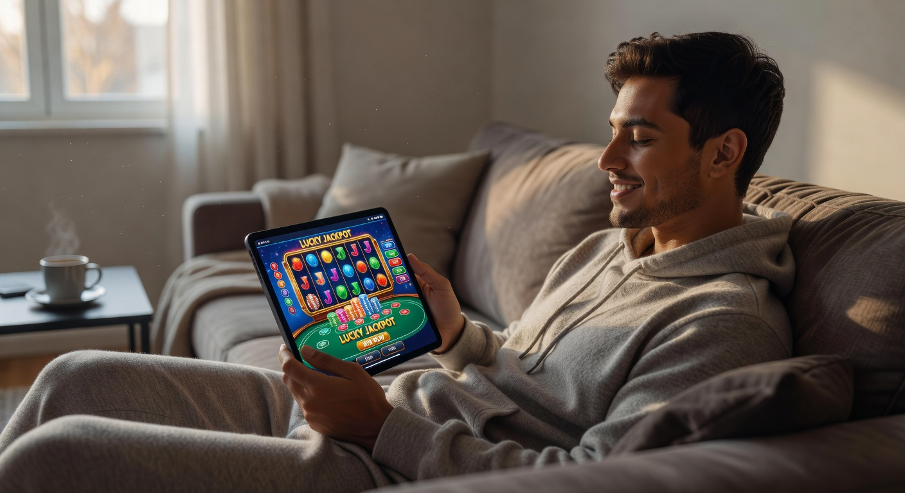
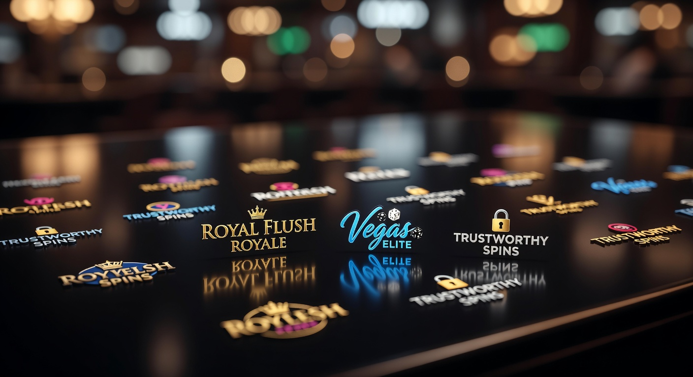

Online casino zonder registratie: De ultieme gids voor 2026
De wereld van iGaming heeft in 2026 een enorme transformatie ondergaan. Voorbij zijn de dagen dat spelers ellenlange formulieren moesten invullen, paspoortkopieën moesten uploaden en dagen moesten wachten op de verificatie van hun account. Het online casino zonder registratie is de nieuwe standaard geworden voor Nederlandse spelers die op zoek zijn naar snelheid, privacy en directe actie. In deze uitgebreide gids duiken we diep in de werking van deze platforms, de voordelen die ze bieden en waar je de meest betrouwbare aanbieders kunt vinden.
Het concept van een online casino zonder account is simpel: je stort geld via je bank en kunt direct beginnen met spelen. Dankzij geavanceerde technologieën zoals iDIN en verbeterde Pay N Play-protocollen van Trustly, wordt je identiteit op de achtergrond geverifieerd terwijl je jouw eerste storting doet. Dit betekent dat je binnen zestig seconden aan de roulettetafel kunt zitten of je favoriete gokkast kunt draaien. In 2026 zien we dat steeds meer spelers de voorkeur geven aan deze efficiënte methode boven de traditionele registratieprocessen.
Bij het navigeren door het enorme aanbod van 2026 is het essentieel om te weten welke sites veilig zijn en welke de beste voorwaarden bieden. Of je nu een fan bent van moderne videoslots, live dealer spellen of sportwedden, er is altijd een platform dat bij je past. In dit artikel analyseren we de marktleiders zoals Instant Casino en Lucky Block, en leggen we uit hoe de Nederlandse regelgeving en systemen zoals CRUKS passen in dit moderne landschap.
Wat is een no-account casino precies?
Een no-account casino, vaak synoniem gebruikt met een online casino zonder registratie, is een gokplatform waarbij de traditionele stap van het aanmaken van een gebruikersnaam en wachtwoord wordt overgeslagen. In plaats van handmatig je gegevens in te voeren, maakt het casino gebruik van je bankgegevens om een "onzichtbaar" account voor je aan te maken. Dit proces is in 2026 veiliger dan ooit tevoren door de integratie van biometrische beveiliging bij banktransacties.
Het fundament van dit type casino ligt in de koppeling tussen de bank en het casino. Wanneer je een storting doet, verstuurt je bank de noodzakelijke KYC-gegevens (Know Your Customer) direct naar de operator. Dit omvat je naam, adres en leeftijd. Hierdoor voldoet het casino aan alle wettelijke verplichtingen zonder dat de speler wordt lastiggevallen met administratieve rompslomp. Volgens bronnen over online gokken op Wikipedia is deze trend van "frictionless gaming" de belangrijkste drijfveer achter de groei van de sector in de afgelopen jaren.
In 2026 zien we ook dat deze platforms niet alleen beperkt zijn tot desktopgebruikers. De mobiele ervaring is zelfs nog gestroomlijnder. Met één druk op de knop en een vingerafdrukscan via je bank-app ben je ingelogd en klaar om te spelen. Het is een revolutie die de drempel voor recreatieve spelers aanzienlijk heeft verlaagd, terwijl de veiligheid gewaarborgd blijft.
Hoe werkt een online casino zonder registratie?

Het technische proces achter een online casino zonder registratie is een knap staaltje fintech-innovatie. Wanneer je op de website van een dergelijk casino aankomt, zie je meestal direct een "Stort en Speel" knop. Je voert het bedrag in dat je wilt storten en selecteert je bank. Vanaf dat moment neemt een betaalprovider zoals Trustly of een directe iDEAL-koppeling het proces over.
Je logt in bij je eigen vertrouwde bankomgeving. Zodra je de betaling bevestigt, deelt de bank de benodigde gegevens met het casino via een beveiligde API-verbinding. Het casino koppelt deze gegevens aan een uniek ID-nummer in hun database. Zo wordt er op de achtergrond een saldo voor je bijgehouden. Als je stopt met spelen en de website verlaat, blijft je saldo gekoppeld aan je bank-ID. De volgende keer dat je "inlogt" via je bank, staat je geld daar gewoon weer voor je klaar.
Een cruciaal onderdeel van dit proces in 2026 is de snelheid van uitbetalen. Omdat je identiteit al is geverifieerd bij de eerste storting, hoeven er geen extra controles plaats te vinden wanneer je je winsten wilt opnemen. In veel gevallen staat het geld binnen enkele minuten, soms zelfs seconden, weer op je bankrekening. Dit niveau van efficiëntie is wat het beste online casino zonder registratie onderscheidt van de rest van de markt.
Het principe van Pay N Play technologie
De term "Pay N Play" werd gepionierd door het Zweedse bedrijf Trustly, maar in 2026 zijn er vele varianten op de markt. Het basisprincipe blijft echter hetzelfde: de betaling is de registratie. Trustly fungeert als de brug tussen de speler, de bank en de operator. Het haalt de vereiste gegevens op bij de bank en verstrekt deze aan het casino, terwijl de betaling direct wordt verwerkt.
Dit systeem heeft de noodzaak voor e-mailverificaties, telefoonnummerbevestigingen en het uploaden van nutsrekeningen volledig geëlimineerd. Voor spelers betekent dit een enorme tijdsbesparing en een hogere mate van anonimiteit ten opzichte van de casino-operator zelf, aangezien zij alleen de hoogst noodzakelijke gegevens ontvangen die wettelijk verplicht zijn.
Storten en direct verifiëren via je bank
In Nederland is iDIN een belangrijke speler geworden in dit proces. iDIN werkt op dezelfde manier als iDEAL, maar in plaats van een betaling te verrichten, verifieert het je identiteit via je bank. Veel casinos zonder registratie gebruiken in 2026 een combinatie van iDEAL voor de betaling en iDIN voor de verificatie. Dit zorgt ervoor dat spelers voldoen aan de strenge leeftijdscontroles die de Nederlandse wetgeving vereist, zonder dat ze zelf documenten hoeven te scannen.
De betrouwbaarheid van dit systeem is ongeëvenaard. Omdat banken de strengste beveiligingsprotocollen ter wereld hanteren, is de kans op identiteitsfraude bij een online casino zonder account minimaal. Spelers voelen zich in 2026 dan ook veel veiliger bij deze methode dan bij het handmatig delen van gevoelige documenten met een gokbedrijf.
✅ Voordelen van Casino’s Zonder Registratie

Waarom kiezen steeds meer mensen voor een online casino zonder registratie in plaats van een klassiek casino? De voordelen zijn talrijk en hebben vooral te maken met de gebruikerservaring en efficiëntie. Hieronder hebben we de belangrijkste pluspunten op een rij gezet:
- Geen registratieformulieren: Je hoeft geen lange formulieren in te vullen met je naam, adres, telefoonnummer en andere persoonlijke details.
- Directe uitbetalingen: Winsten worden vaak binnen 5 tot 15 minuten op je rekening gestort, zonder handmatige goedkeuring van het casino.
- Hogere mate van privacy: Je deelt minder informatie met de casino-aanbieder, wat de kans op datalekken en ongewenste marketing verkleint.
- Veiligheid via de bank: Je maakt gebruik van de vertrouwde en zwaar beveiligde inlogomgeving van je eigen bank.
- Geen spam: Omdat je geen e-mailadres of telefoonnummer hoeft achter te laten, word je niet lastiggevallen met ongevraagde promoties of sms-berichten.
- Eenvoudig mobiel spelen: Het proces is perfect geoptimaliseerd voor smartphones, wat ideaal is voor onderweg.
Naast deze praktische voordelen is er ook een psychologisch aspect. Veel spelers vinden het prettig dat ze geen "band" aangaan met een casino. Je komt binnen, speelt, casht uit en je bent weer weg. Het gevoel van controle over je eigen data en financiën is bij een casino zonder registratie veel sterker aanwezig dan bij traditionele aanbieders. Dit sluit naadloos aan bij de bredere trend in 2026 waarbij consumenten steeds kritischer worden op hun online voetafdruk en privacy.
Wedden zonder registratie: Sportwedstrijden en meer

Niet alleen casino-spellen profiteren van de no-account revolutie. Ook de wereld van sportweddenschappen is volledig omarmd door deze technologie. Wedden zonder registratie is in 2026 enorm populair, vooral tijdens grote evenementen zoals het WK voetbal of de Olympische Spelen. Stel je voor dat je een spannende wedstrijd kijkt en snel een weddenschap wilt plaatsen op de volgende doelpuntenmaker. Bij een traditioneel platform ben je minuten bezig met inloggen of registreren, tegen die tijd kan de kans al voorbij zijn.
Bij een bookmaker zonder registratie kun je direct een inzet plaatsen door een snelle storting te doen. Je bank-ID fungeert als je wedticket. Als je weddenschap wint, kun je de winst direct naar je bankrekening laten storten zodra het resultaat bekend is. Dit zorgt voor een dynamische en interactieve ervaring die perfect aansluit bij de snelheid van moderne sporten.
Grote aanbieders zoals Instant Casino hebben specifieke secties voor sportweddenschappen waar je met dezelfde Pay N Play-methode toegang krijgt tot duizenden markten. Van de Eredivisie tot de NBA en zelfs niche-sporten zoals darts of e-sports; de snelheid van handelen is de grootste troef van online gokken zonder registratie in de sportwereld. Het stelt spelers in staat om direct in te spelen op live odds-wijzigingen zonder enige vertraging.
Online Gokken Zonder Registratie in de praktijk

Hoe ziet een gemiddelde sessie eruit wanneer je besluit om te gaan online gokken zonder registratie? Laten we het stap voor stap bekijken. Je begint met het kiezen van een betrouwbaar platform. In 2026 maken veel spelers gebruik van vergelijkingssites zoals Betninja om de beste bonussen en snelste uitbetalingstijden te vinden. Eenmaal op de site van je keuze, zie je een overzichtelijk interface zonder afleidende "Meld je aan" banners.
Je kiest een bedrag, bijvoorbeeld €50, en klikt op de knop om te storten. Je wordt doorgeleid naar de beveiligde omgeving van Trustly of iDEAL. Na het scannen van een QR-code of het inloggen met je bank-app, is de transactie voltooid. Je keert terug naar het casino en ziet je saldo direct op €50 staan. Nu kun je kiezen uit duizenden spellen van top-providers zoals NetEnt, Evolution Gaming of Pragmatic Play.
Stel dat je een mooie winst behaalt op een gokkast zoals "Starburst XXXtreme". Je saldo staat nu op €200. Je klikt op "Uitbetalen". Omdat het casino al weet wie je bent via de bankkoppeling, hoef je geen documenten te sturen. Je bevestigt het bedrag en binnen enkele minuten ontvang je een melding van je bank-app dat de €200 is bijgeschreven. Dit proces is de essentie van het casino online zonder registratie: maximale efficiëntie zonder onnodige hindernissen.
De beste online casino zonder registratie aanbieders beoordeeld

In 2026 is de markt verzadigd met aanbieders, maar een aantal namen springt er bovenuit vanwege hun betrouwbaarheid, spelaanbod en innovatieve functies. Hieronder bespreken we de top 5 beste casino's zonder registratie van dit moment. Onze experts hebben deze sites uitgebreid getest op basis van uitbetalingssnelheid, licenties en klantenservice.
1. Betninja – De beste vergelijker voor 2026
Hoewel Betninja zelf geen casino is, is het in 2026 de meest essentiële tool voor elke speler. Het platform biedt real-time updates over welke casinos zonder registratie momenteel de hoogste RTP (Return to Player) en de beste bonussen bieden. Door de complexe markt van 2026 helpt Betninja spelers om door de bomen het bos te zien en direct de veiligste opties te selecteren.
De kracht van Betninja ligt in hun onafhankelijke reviews en de community-feedback. Spelers kunnen hier hun eigen ervaringen delen over uitbetalingssnelheden en de kwaliteit van het spelaanbod. Het is de eerste stop voor iedereen die serieus werk wil maken van online gokken zonder account.
2. Instant Casino – Snelste uitbetalingen in de business
Instant Casino doet zijn naam eer aan. In 2026 is dit platform de onbetwiste leider als het gaat om transactiesnelheid. Dankzij hun directe integratie met het Europese SEPA Instant netwerk worden winsten vaak binnen 60 seconden verwerkt. Voor Nederlandse spelers die gewend zijn aan de snelheid van iDEAL, is dit de perfecte match.
Het spelaanbod bij Instant Casino is indrukwekkend, met een sterke focus op live casino games en de nieuwste Megaways slots. Hun interface is minimalistisch en volledig gericht op mobiel gebruik, wat het de favoriete keuze maakt voor de moderne speler die geen tijd wil verspillen aan overbodige graphics.
3. Lucky Block – Beste crypto casino zonder registratie
Voor spelers die de voorkeur geven aan digitale valuta, is Lucky Block de absolute top. In 2026 is het onderscheid tussen traditionele banken en crypto-wallets vervaagd, en Lucky Block speelt hier perfect op in. Je kunt hier storten met Bitcoin, ETH en andere grote munten zonder een account aan te maken. Je wallet-adres dient als je unieke identificatie.
Lucky Block staat bekend om zijn enorme loyaliteitsbeloningen en het ontbreken van limieten op uitbetalingen. Het is een veilige haven voor high rollers die waarde hechten aan anonimiteit en razendsnelle crypto-transacties. Bovendien biedt het platform een uniek ecosysteem met eigen tokens die extra voordelen bieden aan trouwe spelers.
4. CoinCasino – De koning van het live casino
CoinCasino heeft zich gespecialiseerd in de ultieme live dealer ervaring. Als je op zoek bent naar een online casino zonder registratie waar je de sfeer van Las Vegas kunt proeven, dan is dit de plek. Met honderden tafels voor Blackjack, Roulette en Baccarat, verzorgd door professionele dealers, is de kwaliteit hier ongekend.
Wat CoinCasino uniek maakt in 2026, is hun gebruik van VR-technologie. Spelers met een VR-bril kunnen letterlijk door het casino lopen en plaatsnemen aan een tafel, allemaal zonder dat er ooit een registratieformulier aan te pas is gekomen. Het is de perfecte synergie tussen nieuwe technologie en het klassieke no-account concept.
5. Golden Panda – De bonuskoning
Vaak wordt gedacht dat online casino's zonder registratie minder bonussen bieden, maar Golden Panda bewijst het tegendeel. In 2026 trekken zij massaal spelers aan met hun wekelijkse cashback-programma van 10% zonder rondspeelvoorwaarden. Dit betekent dat je elke week een deel van je eventuele verliezen direct als cash terugkrijgt op je bankrekening.
Golden Panda heeft een zeer gebruiksvriendelijke interface en een uitgebreid aanbod aan "Bonus Buy" slots. Voor spelers die graag met extra waarde spelen zonder vast te zitten aan ingewikkelde bonusvoorwaarden, is dit platform een absolute aanrader.
6. Samba Slots – Casino zonder account met iDEAL ondersteuning
Samba Slots is specifiek populair geworden onder de Nederlandse doelgroep vanwege de naadloze integratie met lokale betaalmethoden. Het is een uitstekend voorbeeld van een casino zonder registratie dat de Nederlandse markt begrijpt. Met een vrolijk thema en een focus op toegankelijkheid, trekt het veel recreatieve spelers aan.
Naast slots biedt Samba Slots ook een solide selectie aan Slingo en kraskaarten. Het platform staat bekend om zijn uitstekende klantenservice die in 2026 24/7 bereikbaar is via live chat, waarbij je direct geholpen wordt zonder dat je eerst hoeft in te loggen met accountgegevens.
| Casino | Belangrijkste Kenmerk | Betaalmethode | Uitbetalingssnelheid |
|---|---|---|---|
| Instant Casino | Snelheid & Efficiëntie | Trustly / SEPA | < 5 Minuten |
| Lucky Block | Crypto-vriendelijk | BTC / ETH / LTC | Instant |
| Golden Panda | 10% Wekelijkse Cashback | Bank / Kaart | < 15 Minuten |
| Samba Slots | iDEAL Specialisatie | iDEAL / iDIN | < 30 Minuten |
| CoinCasino | Live Dealer & VR | Crypto / Bank | Instant |
Hier letten onze online casino experts op
Het beoordelen van een online casino zonder registratie vereist een specifieke set criteria. Onze experts kijken verder dan alleen de oppervlakte. In 2026 zijn de standaarden hoger dan ooit, en we accepteren niets minder dan perfectie op de volgende punten:
- Licentiering: Zelfs zonder registratie moet een casino over een geldige licentie beschikken. We controleren op licenties van de MGA (Malta), Curaçao eGaming of de Nederlandse KSA.
- Transactiebeveiliging: We analyseren de SSL-encryptie en de veiligheidsprotocollen van de betalingsverwerkers. Jouw financiële data moet 100% veilig zijn.
- Spelersbescherming: Hoe gaat het casino om met limieten? Zijn er tools voor verantwoord spelen aanwezig, zelfs als je geen vast account hebt?
- Kwaliteit van de Software: We kijken naar de providers. Werkt het casino samen met gerenommeerde namen of met onbekende, ongeteste studio's?
- Transparantie van Voorwaarden: Zijn de bonusvoorwaarden en uitbetalingslimieten duidelijk gecommuniceerd, of zijn ze verstopt in de kleine lettertjes?
Door deze strikte methode kunnen we garanderen dat de aanbevolen platforms op deze pagina de meest betrouwbare opties zijn voor Nederlandse spelers in 2026. Het beste casino zonder registratie moet niet alleen snel zijn, maar ook een rotsvaste reputatie hebben opgebouwd binnen de industrie.
Is een online casino zonder registratie legaal in Nederland?
De juridische status van het online casino zonder registratie in Nederland is een onderwerp dat in 2026 veel aandacht krijgt. Sinds de legalisering van de markt in 2021 is de regelgeving voortdurend aangescherpt. Voor een casino om legaal in Nederland te opereren, moet het een licentie hebben van de Kansspelautoriteit (KSA). De KSA stelt strenge eisen aan de identificatie van spelers om minderjarigen te weren en kansspelverslaving te voorkomen.
Veel online casino's zonder registratie maken gebruik van iDIN om aan deze identificatieplicht te voldoen. Omdat iDIN gekoppeld is aan je bankrekening, waarbij je identiteit al door de bank is geverifieerd, accepteert de Nederlandse wetgever dit in veel gevallen als een valide vorm van KYC. Echter, veel van de internationaal populaire no-account casino's opereren onder een MGA-licentie. Hoewel deze technisch gezien niet "legaal" zijn volgens de strikte Nederlandse wet, zijn ze vaak wel veilig en betrouwbaar voor spelers.
Het is belangrijk om te begrijpen dat jij als speler niet strafbaar bent als je speelt bij een buitenlands casino zonder account, mits je zelf je belastingen netjes regelt indien dat nodig is. In 2026 is de grens tussen nationale en internationale aanbieders steeds vager geworden door de Europese harmonisatie van online diensten. Toch raden we aan om altijd te controleren of een aanbieder de nodige maatregelen treft om Nederlandse spelers te beschermen volgens de Europese standaarden.
De rol van iDEAL, Trustly en Crypto
Zonder innovatieve betaalmethoden zou het online casino zonder registratie niet bestaan. In 2026 zien we een interessante strijd tussen drie grote kampen: de traditionele bankoplossingen, de gespecialiseerde fintech-providers en de opkomende cryptovaluta.
iDEAL blijft in Nederland de onbetwiste koning. Het is diep geworteld in ons betalingsverkeer en biedt met de introductie van iDEAL 2.0 in 2025 nog meer mogelijkheden voor directe verificatie. Veel casinos zonder registratie gebruiken iDEAL als hun primaire toegangspoort voor de Nederlandse markt, vaak in combinatie met iDIN voor de leeftijdscheck.
Trustly is de drijvende kracht achter de Europese Pay N Play markt. Hun technologie stelt spelers uit heel Europa in staat om bij hetzelfde casino te spelen met hun eigen lokale bank. De stabiliteit en snelheid van Trustly zijn legendarisch, en in 2026 is hun netwerk uitgebreid naar vrijwel alle grote banken in de EU. Forbes heeft Trustly herhaaldelijk genoemd als een van de meest invloedrijke fintech-bedrijven die de gokindustrie hebben veranderd.
Ten slotte is er Crypto. Platforms zoals Lucky Block laten zien dat digitale munten zoals Bitcoin en ETH een serieuze concurrent zijn. Crypto biedt een niveau van privacy en snelheid waar zelfs banken moeite mee hebben. In 2026 zien we dat steeds meer reguliere spelers overstappen op crypto voor hun goksessies vanwege de afwezigheid van bankcontroles en de directe verwerking van enorme bedragen.
Uitbetalingssnelheid en limieten
Een van de grootste ergernissen bij traditionele casino's is de verwerkingstijd van uitbetalingen. Je wint een mooi bedrag, maar het duurt drie werkdagen voordat de financiële afdeling je verzoek goedkeurt, en daarna nog eens twee dagen voordat de bank het verwerkt. Bij een online casino zonder registratie is dit proces volledig geautomatiseerd.
Dankzij de directe bankkoppelingen worden uitbetalingen vaak "instant" verwerkt. Dit betekent dat zodra je op de knop klikt, het algoritme controleert of je aan de (minimale) voorwaarden voldoet en het geld direct overboekt. In 2026 is een uitbetalingstijd van meer dan 15 minuten simpelweg niet meer acceptabel voor een top-tier casino online zonder registratie.
Wat betreft limieten, deze zijn vaak ruimer bij no-account platforms. Omdat de verificatie via de bank zo waterdicht is, hebben casino's meer vertrouwen in de herkomst van de fondsen. Toch zijn er altijd limieten per transactie of per dag om witwassen tegen te gaan en de veiligheid te waarborgen. Spelers die bij beste casino's zonder registratie spelen, kunnen doorgaans rekenen op dagelijkse uitbetalingslimieten tussen de €5.000 en €50.000, afhankelijk van de aanbieder.
Welkomstbonus en promoties bij een online casino zonder registratie
In de beginjaren van het no-account gokken waren bonussen zeldzaam. Het argument was dat de snelheid en het gemak van het platform al een bonus op zich waren. In 2026 is de concurrentie echter zo moordend dat elk online casino zonder registratie welkomstbonussen en promoties aanbiedt om spelers te lokken.
De meest voorkomende bonussen zijn:
- Cashback: Je krijgt een percentage (vaak 10-20%) van je netto verliezen terug. Dit is de meest populaire vorm omdat er vaak geen rondspeelvoorwaarden aan zitten.
- Free Spins: Bij je eerste storting ontvang je spins op een populaire gokkast. Winsten uit deze spins worden direct als cash aan je saldo toegevoegd.
- Stortingsbonus: Hoewel zeldzamer, bieden sommige sites zoals Golden Panda een match-bonus op je eerste storting. Let hierbij wel goed op de inzetvereisten.
Het grote verschil met traditionele bonussen is de transparantie. Omdat je bij een online casino zonder account direct je geld wilt kunnen opnemen, zijn de voorwaarden vaak veel soepeler. Niemand wil 40 keer zijn bonus rondspelen als het hele concept van de site "snelheid" is. Daarom zien we in 2026 een trend naar bonussen met lage of zelfs géén rondspeelvoorwaarden.
De relatie tussen no-account gokken en CRUKS
Voor Nederlandse spelers is CRUKS (Centraal Register Uitsluiting Kansspelen) een belangrijk begrip. Als je je inschrijft bij CRUKS, word je voor minimaal zes maanden uitgesloten van alle Nederlandse casino's, zowel online als fysiek. Dit systeem is bedoeld om probleemspelers tegen zichzelf te beschermen. Maar hoe zit dit bij een online casino zonder registratie?
Nederlandse casino's met een KSA-licentie zijn verplicht om elke speler te controleren tegen het CRUKS-register voordat ze toegang krijgen. Dit doen ze via je BSN of via iDIN. Als je bent ingeschreven, kun je daar dus niet spelen. Echter, veel online casino's zonder account met buitenlandse licenties (zoals MGA of Curaçao) hebben geen toegang tot het Nederlandse CRUKS-systeem. Dit betekent dat zij spelers niet automatisch kunnen blokkeren op basis van dit register.
Dit brengt een eigen verantwoordelijkheid met zich mee. Hoewel deze "Casino's zonder CRUKS" populair zijn onder spelers die onterecht of per ongeluk geregistreerd staan, is het risico voor echte probleemspelers groter. Gelukkig bieden de meeste gerenommeerde internationale casinos zonder registratie in 2026 hun eigen uitsluitingstools en limieten aan, zodat je alsnog de controle kunt behouden over je gokgedrag.
Spelaanbod en providers
Maakt het ontbreken van een registratieproces uit voor de spellen die je kunt spelen? Absoluut niet. In 2026 is het spelaanbod bij een online casino zonder registratie identiek aan, of soms zelfs beter dan, bij traditionele casino's. De grootste softwareontwikkelaars ter wereld werken graag samen met no-account platforms omdat deze vaak een moderner publiek aantrekken.
Je kunt rekenen op duizenden titels van providers zoals:
- Pragmatic Play: Bekend om hits als "Gates of Olympus" en hun uitgebreide live casino aanbod.
- NetEnt: De klassiekers zoals "Starburst" en "Gonzo's Quest" blijven immens populair.
- Hacksaw Gaming: Voor innovatieve slots met een hoge variantie en unieke thema's.
- Evolution Gaming: De absolute marktleider in live game shows zoals "Crazy Time" en "Lightning Roulette".
Naast slots en live tafels zien we in 2026 ook een opkomst van "Instant Win" games en "Crash Games" zoals Aviator. Deze spellen passen perfect bij de snelle aard van het online casino zonder account. Je kunt binnen enkele seconden een ronde spelen en direct je winst verzilveren.
Gebruiksgemak en mobiel spelen
In 2026 wordt meer dan 85% van alle online weddenschappen geplaatst via een mobiel apparaat. De technologie achter online casino's zonder registratie is vanaf de grond opgebouwd met "mobile-first" in gedachten. Het hele proces van storten via je bank-app en direct spelen werkt op een smartphone zelfs nog intuïtiever dan op een desktop.
Omdat je geen ingewikkelde wachtwoorden hoeft te onthouden of 2FA-codes (Two-Factor Authentication) van je e-mail hoeft te kopiëren, is de drempel om even snel een paar spins te doen erg laag. De websites zijn lichtgewicht, laden razendsnel en passen zich perfect aan elk schermformaat aan. In 2026 zien we dat speciale casino-apps minder noodzakelijk zijn geworden; de browser-ervaring is zo vloeiend dat een app vaak alleen maar extra opslagruimte inneemt.
Het beste online casino zonder registratie van 2026 biedt bovendien biometrische integratie. Dit betekent dat nadat je je eerste storting hebt gedaan, de site je de volgende keer herkent via FaceID of je vingerafdruk, direct gekoppeld aan je bankverificatie. Dit is het toppunt van gebruiksgemak in de huidige digitale wereld.
Verantwoord Gokken en preventie
Hoewel de snelheid en het gemak van een online casino zonder registratie grote voordelen zijn, brengt het ook risico's met zich mee. Het is makkelijker dan ooit om geld te storten, wat kan leiden tot impulsief speelgedrag. Daarom is verantwoord gokken in 2026 een centraal thema voor zowel spelers als aanbieders.
Betrouwbare no-account casino's implementeren proactieve maatregelen, zoals:
- Sessie-timers: Je krijgt een melding als je een bepaalde tijd aan het spelen bent.
- Stortingslimieten: Zelfs zonder account kun je via de betaalinterface limieten instellen voor jezelf.
- Reality Checks: Regelmatige pop-ups die je laten zien hoeveel je hebt gewonnen of verloren.
- Zelfuitsluiting: De mogelijkheid om je bank-ID permanent of tijdelijk te laten blokkeren voor toegang tot het platform.
Wij raden elke speler aan om vooraf een budget te bepalen en zich hier strikt aan te houden. Maak gebruik van de tools die het online casino zonder account biedt. Voor meer informatie over hulp bij gokken kun je terecht op de website van de Rijksoverheid of gespecialiseerde instanties voor verslavingszorg.
Veelgestelde vragen (FAQ)
Is een online casino zonder registratie veilig?
Ja, mits de aanbieder beschikt over een geldige licentie en gebruikmaakt van vertrouwde betaalproviders zoals Trustly, iDEAL of grote crypto-netwerken. De beveiliging via je bank is vaak sterker dan de traditionele wachtwoord-beveiliging.
Kan ik met iDEAL spelen bij een casino zonder account?
Zeker. In 2026 ondersteunen de meeste online casino's zonder registratie die zich op de Nederlandse markt richten iDEAL. Vaak wordt dit gecombineerd met iDIN voor de noodzakelijke verificatie van je leeftijd en identiteit.
Wat gebeurt er met mijn geld als ik de website sluit?
Je saldo blijft veilig bewaard. Omdat je geld gekoppeld is aan je bank-ID (via Trustly of iDEAL), wordt je saldo direct weergegeven zodra je de volgende keer de site bezoekt en "inlogt" via je bank. Je kunt het ook op elk gewenst moment uitbetalen voordat je de site verlaat.
Zijn er nadelen aan online gokken zonder registratie?
Het belangrijkste nadeel is dat het risico op impulsief spelen groter kan zijn door de snelheid van storten. Daarnaast hebben sommige no-account casino's minder uitgebreide loyaliteitsprogramma's vergeleken met traditionele casino's, al verandert dit snel in 2026.
Hoe snel staan mijn winsten op mijn rekening?
Bij het beste casino zonder registratie staat je winst doorgaans binnen 5 tot 15 minuten op je rekening. Bij crypto-casino's zoals Lucky Block is dit vaak zelfs onmiddellijk na de bevestiging op de blockchain.
Kan ik bonussen krijgen zonder account?
Ja, veel platforms bieden tegenwoordig cashback-bonussen, free spins en soms zelfs stortingsbonussen aan no-account spelers. Deze worden automatisch gekoppeld aan je tijdelijke sessie-ID.

Digitale marketeer en contentspecialist met ruim 7 jaar ervaring.